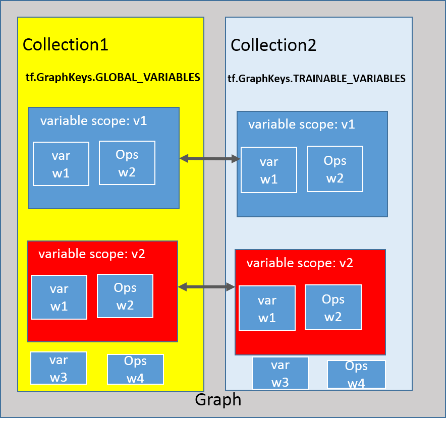

Tensors
注： 必须初始化，才能使用
eval()
run()
Variable
作用：用于记录graph的状态，即，记录拟合函数$g(X)$的权重。
创建Variable操作具有以下作用：
- 将该Variable作为graph的一个节点并
必须指定初始化器或者初值 - 将该Variable放到键值为tf.GraphKeys.GLOBAL_VARIABLES的collections集合中
- 若trainable为true，则将该Variable放到键值为tf.GraphKeys.TRAINABLE_VARIABLES的collections集合
注：trainable为true表明该变量会进行更新，collections可以认为是一个空间，用于存放变量。
变量创建方式1：
1 |
|
以此种方式创建变量var， var与initial-value的数据和形状一致，若定义出现两个名字一致的变量，会在后面定义的变量名称加上后缀_1,_2,_3,…”。
tensorflow定义了如下函数可以用来指定初值：
| Function | Description |
|---|---|
| tf.zeros(shape, dtype=tf.float32,name=None) | 产生全0的tensor |
| tf.ones(shape, dtype=tf.float32,name=None) | 产生全1的tensor |
| tf.random.normal(shape, mean=0.0, stddev=1.0) | 产生服从正态分布的tensor |
| tf.random.uniform(shape, minval=0.0, maxval=NOne) | 产生服从均匀分布的tensor |
| tf.random.truncated_normal(shape, mean=0.0, stddev=1.0) | 产生服从截断正态分布的tensor |
注：shape参数用来指定产生随机数的维度
| List | Description |
|---|---|
| [] | 0维，标量 |
| [d1] | 1维 |
| [d1,d2] | 2维 |
| [None,d2] | 2维,第一维度数目可以是任意值 |
| [d1,d2,d3] | 3维 |
| [d1,d2,d3,…] | n维 |
变量创建方式2：
1 |
|
创建名为name的变量，初始化器由initializer指定，形状由shape指定。 在不复用变量的情况下，若定义两个名字一样的变量，则会报错。
Tensorflow内的initializer有：
| class | constructor |
|---|---|
| tf.contrib.layers.xavier_initializer | ~(uniform=True)，uniform=False采用正态分布 |
| tf.random_normal_initializer | ~(mean=0.0, stddev=1.0) |
| tf.random_uniform_initializer | ~(minval=0, maxval=None) |
| tf.truncated_normal_initializer | ~(mean=0.0, stddev=1.0) |
| tf.ones_initializer | ~() |
| tf.zeros_initializer | ~() |
For Examples:
1 |
|
Constant
常量,在图中值不改变，不能进行reshape操作。
1 | tf.constant( |
For Examples:
1 | # Constant 1-D Tensor populated with value list. |
placeholder
placeholder用于graph的输入,一般指定shape和dtype，name。
1 | tf.placeholder( |
manager Tensors

如图所示，在Tensorflow中，采用层次的结构来管理operations：collection $\leftarrow$ variable scope $\leftarrow$ operations。 从该图还可以得到如下信息：
- tensorflow图自定义了多个集合，例如集合1,2。集合1,2分别存放所有的，只用于训练的操作和张量。
- 集合通过键值进行区分，例如集合1,2的键值分别为tf.GraphKeys.GLOBAL_VARIABLES，tf.GraphKeys.TRAINABLE_VARIABLES。
- 为了避免出现操作和张量同名，定义了次级空间variable scope。在同一scope下的操作和张量具有相同的前缀名。该scope类似于c++里的namespace。
- 同一scope可以同时在多个集合中，图中v1，v2都属于集合1,2。
- 也可以存放一些没有在variable scope内的张量和操作。
variable scope
作用：定义一个子空间，存放操作和张量。
定义: tf.variable_scope
1 |
|
注：当reuse=false时，利用tf.get_variable定义tensor时不能出现两个同名张量。如若为True，后定义的张量与前面定义的张量一致。此外，对Variable定义tensor无影响。
For example1
2
3
4
5
6
with tf.variable_scope("hello"):
var = tf.get_variable("var", shape =[1,2], intializer=tf.zeros_initializer())
var1 = tf.get_variable("var", shape =[1,2], intializer=tf.zeros_initializer()) ==> error
1 |
|
collection
作用：存放操作和张量。
操作：
- 从某个collection获取某个scope的variable集合：
1 |
|
- 从某个collection获取所有的variable：
1 |
|
- 将variable 添加至自定义集合name
1 |
|